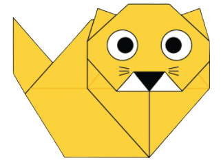

Chameleon
- Chameleons have eyes in the backs of their heads.
- Most chameleons eat on things you wouldn’t want to find on your dinner plate.

Pigeon
- Pigeons are renowned for their outstanding navigational abilities.
- Pigeons mate for life, and tend to raise two chicks at the same time.

Camel
- Camels have three sets of eyelids and two rows of eyelashes to keep sand out of their eyes.
- Camels have thick lips which let them forage for thorny plants other animals can't eat.

Teddy Bear
- The teddy was named after President Theodore Roosevelt, after he refused to shoot a bear during a 1902 hunting trip.
- The Oxford English Dictionary dates the first use of the term teddy bear to 1906.

Panda
- Pandas go from pink to white and black.
- An adult panda can eat 12–38 kilos of bamboo per day!

Flying Cicada
- The loud whirring or buzzing sound you hear is an all-male cicada chorus.
- Female cicada may be attracted to the sound of motors!

Cat
- There are over 500 million domestic cats.
- Cats and humans have been associated for nearly 10000 years.